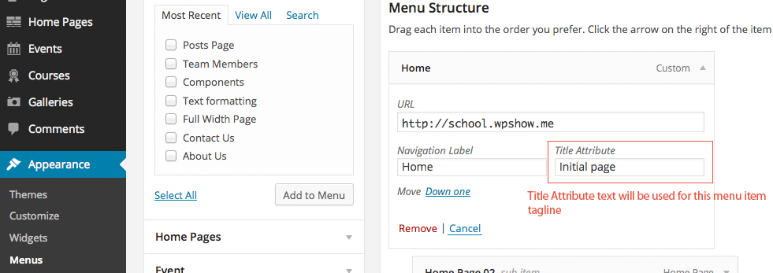

Please read carefully and you'll be able to run a demo site shortly.
/%category%/%postname%/ or /%category%/%postname%-%post_id%/ into an empty input field.Home Pages is a custom post type. It has a really cool tool that helps you build awesome home page in just a couple of minutes.
In order to make your own home page from Dashboard select Home Pages > Add New. Enter the title of your home page (it won't be visible) and start composing...
It should be as easy as adding rows and columns. Section represents the row while the section layout refers to a number of columns per that very row.
It's good to know that Sections are both repeatable and sortable! The same goes for shortcode boxes: create as many as needed then drag'n'drop to sort at will.
Whenever section layout is selected, use the plus mark to insert shortcode into the box.
Go ahead, give it a shot, you can't screw anything up. The only thing you need is a bit of practice!
The process of turning custom home page into your website front page conforms WordPress standards! As usually:
go to Dashboard, select Settings > Reading.
Under Reading settings, Front page displays, tick "A static page (select below)" option then from the "Front page" drop-down select your new home page by the title.
Don't forget to Save Changes.
Keep the content tidy, well organized and visually attractive to your website visitors!
There are two, very simple rules to remember when working with Shortcodes:
It has to be pointed out that some Shortcodes require double action. Tabed Content, Accordion and Slider are special type of Shortcodes whose content is added in two steps.
STEP 1 - adds wrapper. Only one wrapper is needed per Shortcode instance!
STEP 2 - adds single item. This action can be repeated as many times as needed, within a single wrapper.
In order to be able to better understand how Columns shortcodes are working, be sure to read about Bootstrap grid system. These shortcodes are in direct relation to it!
Reusable content? Why not. It'll be stored in shortcode.
The purpose of Content Chunks should be pretty straightforward: create a piece of content that can easily be included in Page, Post, Custom Post Type or Widget via shortcode.
Each and every content chunk obtains unique id which is a part of its shortcode. Whenever you need to "pull" specific content chunk into a Page or Post simply copy-paste entire shortcode.
Of course, it can even be simpler! All of your Content Chunks are getable thru theme's standard Shortcodes library so you don't even need to copy-paste.
Create as many as needed with an unlimited number of photos. Insert via shortcode.
If you don't like those complex image sliders with zillions of options that make you pull your hair off, this is something you gonna like. Create/publish a Slider quickly by using good, old WordPress interface with no tricky or hidden options.
The best of all: once published your new Slider immediately becomes available thru the theme Shortcodes library. Otherwise, it can be inserted anywhere to Post, Page, Custom Post Type or Widget via shortcode.
Each Slider can be different because each one uses its own settings! Each slide can have a different caption or become a link to remote/inner page!
Announce and list different school occasions without any plugin.
Events is a custom post type used to announce (upcoming) occasion. With an each event you'll be able to set start/end date and start/end hour according to which events get presented on front-end. Events are published as any other regular Post in WordPress, however they will never be listed by date of publish.
Expired events will not be listed, however, events archive will keep the record of all past events.
Manage searchable school courses library easy way.
This theme is equipped with another powerful feature that seems to be inevitable for every school: Courses.
Categorize them, create as many as needed with as many features as needed (per course!), attach unlimited number of downloads/documents (per course)...
The most important fact is that all of the course features are automatically turned into the search keywords! It means that any course can be searched by title, ID, instructor, credits or any other course feature provided.
Unlimited number of features per course
School galleries at one place rather than spread across different posts.
There's no easier method to manage school galleries. Create and publish as you would do with any other WordPress post. What makes things even better is a bulk uploader; just drag'n'drop photos from a system folder into your gallery post!
Don't "attach" galleries to Posts or school Events - unless you really need to. It'll be harder for people to find photos of their interest.
Rather create a separate gallery and then provide a link to it.
This theme feature allows you to classify or categorize galleries and thus enable a better browsing experience.
Bulk upload photos to gallery, just drag'n'drop from desktop or any other system folder.
These are used to give a particular page different look and purpose.
Buntington theme uses 3 custom templates: Contact, Full width page and Posts Page. Their names in regards of purpose are pretty much self-explanatory.
The only difference is what gets added automatically to a certain custom templated Page when viewed...
Contact page will get a Google Map in page header and a mini contact form. See Appearance > Buntington Options >> Contact in order to setup both GoogleMap and personal contact info. If you enter some text when this Custom Template is assigned, it will be shown above the contact form.
Full width page remains empty, no extras are added. That Custom Template will remove the sidebar so use it whenever sidebar is not needed.
Posts Page is used to render blog posts in standard form while on category page they get rendered in grid.
Just for case you are new to Custom Templates...the thing is pretty straightforward. You can assign a custom template to any individual Page by using the Template dropdown in the New/Edit Page screen, Page Attributes panel (right hand sidebar). Here's the shot which should make it as clear as possible
So, whenever you need one of these Custom Templates you are going to:
Important information that might save time and keep you calmed down.
First of all you gonna need gettext catalogs (.po files) editor. My favorite is POedit because it's free and cross-platform friendly. For the purpose of translation you can use any other gettext editor.
Open a file named "en_EN.po" which can be found in "Buntington/languages" folder. Translate then save/export two files; "YOUR_LOCALE.po" and "YOUR_LOCALE.mo".
Be sure to keep your language files in "Buntington/languages" folder!
What exactly stands YOUR_LOCALE for?
Well it's more like a tag that helps WordPress identify language being used with it. For example, if you need to localize your theme copy to Dutch, you'll save translated files as "nl_NL.po" and "nl_NL.mo". If you need to translate to French it's gonna be "fr_FR.po" and "fr_FR.mo".
Check out WordPress Codex for complete list of locales.
Layout builder from Home Pages can be used with "regular" Page as well. However, IT IS IMPORTANT TO SELECT A PROPER CUSTOM TEMPLATE! If "Page Builder" template not selected, your "regular" Page remains as is. Once you select "Page Builder" template, the content from text editor will be ignored and your custom layout/content will be show.
If you wonder how the tagline was added below each Main Menu item check out the figure below. It should be pretty straightforward; just use Title Attribute input field which is available in menu item panel.

Buntington theme is equipped with an ample library of different styles that can be applied directly on portion of text or elements in text editor (tiniMCE).
So, for example, if you want to turn a regular title (H1 thru H6) into a Title Median, place the cursor within existing title element then from Formats drop-down select Title Median.
Additionally, if you need to remove title's bottom margin leave cursor within the title element then from Styles drop-down select Remove element margin bottom.
For both of these two authorization is required. No worries, hard job is already done. The only thing you'll need to assure are some strange "keys" and "tokens" which, by the way, are available from your Twitter and Flickr accounts.
More details can be found HERE and HERE (for Flickr and Twitter respectively).
So, once you got it refer to Theme Options > API Keys and populate correspondingly.
Theme's backend relies on Vafpress framework whose documentation should help you get started. Of course, PHP knowledge is a must! By studying existing code that is made according to Vafpress standards you'll be able to get your own.
All the relevant files reside in "Buntington/admin" folder.
Open "Buntington/public/img" folder and replace "site-logo.png" with your own logo file. Remember, your own logo must be a namesake which means it should be named site-logo and keep PNG file type.
You will have to delete all the previously imported content (including Menus, photos, etc.) and try again. Keep on mind that WP Importer plugin is not perfect and the same goes to WP Export tool.
In case you'd rather like to import entire database feel free to contact me via PM and I'll mail it to you.
| bootstrap/js/bootstrap.min.js | All compiled plugins required by Bootstrap framework. |
| js/dropdown/dropdown-menu.js | Lightweight, Simple, Styleable - jQuery + CSS Dropdown Menu Plugin. |
| js/fancybox/jquery.fancybox.pack.js js/fancybox/jquery.fancybox-media.js |
FancyBox plugin - a tool that offers nice and elegant way to add zooming functionality for images, html content and multi-media. It is built upon jQuery, easy to implement and customize. |
| js/audioplayer/audioplayer.min.js | Audioplayer - HTML5 audioplayer by Osvaldas Valutis. |
| js/jquery.fitvids.js | FitVids - fluid width video embeds (YouTube, Vimeo, Blip.tv, Viddler and Kickstarter). |
| js/jquery.easy-pie-chart.js | Easy pie chart - jQuery plugin that uses the canvas element to render simple pie charts for single values. |
| js/theme.js | This file is supposed to initalize most of the plugins and contains small chunks of code needed by the template itself. |
Once again, thank you so much for purchasing Buntington theme. I'd be glad to help you if you have any further questions relating to this item. No guarantees, but I'll do my best to assist. You might also consider visiting the forums and asking your question in the "Item Discussion" section.